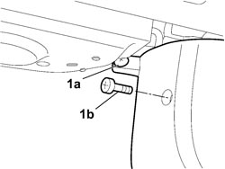
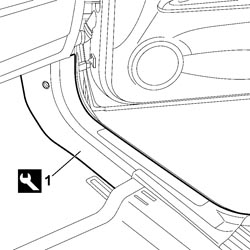

7040L41 RIGHT FRONT DOOR COMPARTMENT SILL PLATE RR
- Path
- Procedures > 70 FITTINGS > 7040 BODY INTERIOR FITTINGS AND TRIM > 7040L CABIN FLOOR COVERING > 7040L41 RIGHT FRONT DOOR COMPARTMENT SILL PLATE RR
- Kind
- repair procedure (removal / refitting; the operation number is the code)
- Applies to
- all engines; all production periods
- Interactive page
- https://sloeber94.github.io/elrnDB-fCrm/en/#/194001080
Applies to: all engines; all production periods
 Removing
Removing
 Refitting
Refitting1. Working in the lower part of the dashboard, undo the fixing bolts (1a) and (1b).

Applies to: all engines; all production periods
1. Using the special tool, release the running board from the mountings and remove it from the vehicle.
Tool | Description | Function | Validity |
|---|---|---|---|
1878077000 | Knife | Retainer removal |

Applies to: all engines; all production periods
Refitting
Removing- Check that the running board is not damaged.
- Place the running board in position and secure it by pressing on the mounting points.
- Working in the lower part of the dashboard, tighten the fixing bolts.
Topics that link to this page (16)
- 5010B47 SIDE AIR DUCT TO REAR SEATS (ONE), LH OR RH - R.R.
- 5040C10 AIR CONDITIONING CASING - R.R
- 5040C50 AIR CONDITIONING HEATER RADIATOR - R.R.
- 5040C64 A/C EVAPORATOR - R+R
- 5040D80 AIR CONDITIONER SYSTEM WIRING BUNDLE - R R OR REPLACE
- 5040D94 AIR CONDITIONING LEFT UPPER AIR DISTRIBUTION FLAP MOTOR (DEFROST) - R.R
- 5505C10 FRONT CROSSMEMBER WIRING - R.R
- 5505C31 BUILT-IN WIRING UNDER DASHBOARD - R.R.
- 5505C41 PASSENGER COMPARTMENT WIRING - R.R
- 5570T70 PAGER/COMPACT DISC WIRING HARNESS - R&R OR REPLACE
- 7005A14 FRONT SIDE DOOR - ADJUST CENTERING AND MOULDING - INCLUDES ADAPTATION OF HINGES AND SEALS ON DOOR COMPARTMENT
- 7005A24 FRONT SIDE DOOR HINGES (BOLTED) - R.R. WITH DOOR DETACHED
- 7005A34 FRONT SIDE DOOR COMPARTMENT SEAL - R.R
- 7040A97 INSTRUMENT PANEL TRIM SUPPORTING CROSSMEMBER - R.R
- 7040L17 PASSENGER COMPARTMENT FLOOR FRONT CARPET - R.R.
- 7045A23 SUPPORT/GUIDE FOR FRONT SEAT, LEFT OR RIGHT - R.R.